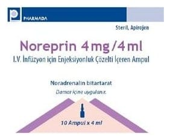

Noreprin 4 mg/4 ml I.V. İnfüzyon İçin Enjeksiyonluk Çözelti İçeren Ampul ,10 Ampul

Ne için kullanılır
KT · Bölüm 1NOREPRİN hastanede uzmanlaşmış tıbbi personel tarafından kullanılması gereken bir ilaçtır.
NOREPRİN 10 adet 4 ml çözelti içeren tip I cam ampullerden oluşmaktadır. Her bir ampul etkin madde olarak noradrenalin bitartarat içerir.
NOREPRİN çözelti şeklinde sunulur ve sadece seyreltildikten sonra damar içine uygulanır.
NOREPRİN steril, berrak, renksiz ya da açık sarı renkli, partikülü olmayan sulu çözeltidir.
NOREPRİN aşağıdaki acil durumlarda kullanılır:
- Akut hipotansiyon (ani düşük kan basıncı) durumlarında kan basıncının normale döndürülmesinde.